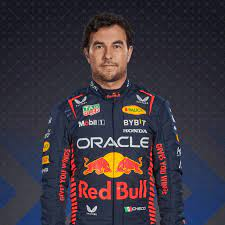
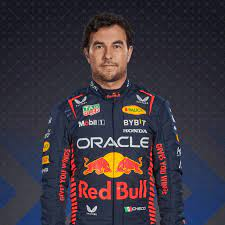

Red Bull
Red Bull Racing je rakouský tým ve Formuli 1. Tým byl založen v roce 2005 a od té doby se stal jedním z nejúspěšnějších týmů ve sportu. Red Bull Racing je známý svým agresivním a inovativním přístupem k závodění a vyhrál celkem sedm konstruktérských titulů. Mezi nejvýznamnější jezdce týmu patří Sebastian Vettel a Max Verstappen. Rok 2023 začali fenomenálním startem. Současnými jezdci jsou Max Verstappen a Sergio Pérez
Bahrain
 
